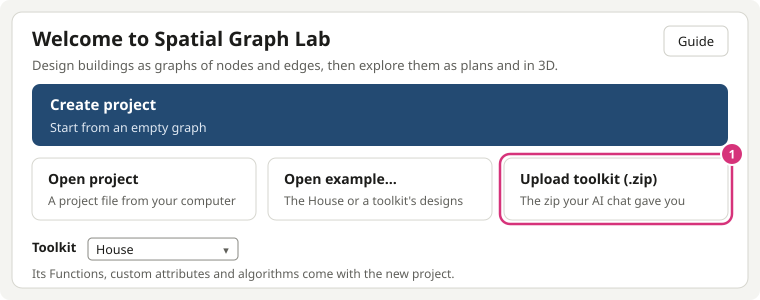

Page 6 of 16 · In the browser
Exercise 2 in the browser: your own toolkit
Make your whole toolkit with an AI chat and upload it into the app as one zip. No Git, no repository, nothing to install: only a browser.
The other way, on your computer with Git, is About the repository and the pages after it. Both end with the same zip to submit.
Orange ___ = fill in your own. Grey buttons like Copy = something to click.
01Your toolkit name
The name of your toolkit folder and of your zip.
Your toolkit name
The name of your toolkit folder and of your zip.
u + the last 3 digits of your student number + your initials + a short toolkit name, lowercase, joined with -. Student number …123, initials HK, toolkit House: u123-hk-house.
- Toolkit name
<your-toolkit-name>- Folder
<your-toolkit-name>/- Zip
<your-toolkit-name>.zip
Remembered only in this browser. The prompt below fills in with it.
Choose it once: don't rename it later.
Keep it private. Only the last 3 digits of your student number go in it: put no full student number, passwords or keys in your toolkit.
02Write your plan
In plain words; the prompt in step 04 fills itself in.
Write your plan
In plain words; the prompt in step 04 fills itself in.
Remembered in this browser only.
03Download the toolkit kit
The zip the chat reads.
Download the toolkit kit
The zip the chat reads.
What is in it? Where else is it?
The AI's instructions (PROMPT.md), the toolkit guide, the Student API reference, a starter toolkit and the House example. The same kit is in the app: Guide › Toolkits & JSON › Make your own toolkit › Upload in the app.
04Ask an AI chat for the zip
Attach the kit, send the prompt, answer its questions, download the zip.
Ask an AI chat for the zip
Attach the kit, send the prompt, answer its questions, download the zip.
Rules: write only the files of my toolkit folder <your-toolkit-name>/. Import only from @student-api and from files in that folder, and use no packages. I've attached the Spatial Graph Lab toolkit kit. Read PROMPT.md and every file in it first, then ask me your clarifying questions before you write any code. After my answers, write my toolkit following it exactly. The folder name is exactly my toolkit name. I will upload it in the app with Upload toolkit (.zip), not put it in a repository: give me ONE zip, <your-toolkit-name>.zip, with the folder <your-toolkit-name>/ inside it and toolkit.ts directly inside that folder. Do not write any design: make the folder designs/ with only a short README.md that says how to add a design, and do not set defaultDesign in toolkit.ts. I will draw my designs in the app. Toolkit name: ___ My idea: ___ Functions (and their attributes): ___ Algorithms: ___
- Open a new chat and attach the kit zipAny AI chat that accepts files, such as claude.ai, chatgpt.com or gemini.google.com.
- Paste the prompt and send itUse Copy on the dark box above. Lines still showing orange ___ are empty: fill them in in step 02 first.
- Answer its questionsIt asks before it writes any code. Then it writes your toolkit and a short summary: ask for changes now, in plain words.
- Download the zip
<your-toolkit-name>.ziplands in your Downloads folder. Don't unzip it.
The chat refuses the kit, or gives code instead of a zip (fix)
- Refuses the kit: unzip it and attach its
.mdfiles instead, or try another chat. - Code blocks instead of a zip: ask “Please give me the folder as one zip”. Still no zip? Try another chat, or ask your tutor.
05Upload the zip in the app
On the Welcome screen.
Upload the zip in the app
On the Welcome screen.
- Open the appspatial-graph-lab.vercel.app. A project already open? Use Project › Toolkit › Upload toolkit (.zip) instead.
- Upload itUpload toolkit (.zip) › choose
<your-toolkit-name>.zip.a new project opens with your toolkit and an empty graph. Project says Toolkit: your toolkit (uploaded).

Which zip does it accept?
The zip the chat gives you: toolkit.ts directly inside the folder <your-toolkit-name>/, or directly in the zip. The zip's own name does not matter.
A project made without a toolkit? (optional)
Project › Toolkit › Add a toolkit… › your zip gives that project your toolkit. Your rooms and values stay; it cannot be removed again.
06Problems listed? Fix them in the chat
The app lists what is wrong and keeps the project you had open.
Problems listed? Fix them in the chat
The app lists what is wrong and keeps the project you had open.
- Copy every problemCopy the problems. Each line is
<file>: <message>, for examplealgorithms/count-beds.ts: …. - Paste them into the same chatAnd ask: “Fix exactly these and give me the whole folder again as one zip.”
- Upload the new zipOn the Welcome screen again, or in an open project: Project › Toolkit › Upload toolkit (.zip). A new version of the same toolkit replaces the old one after you confirm.
Uploaded a different toolkit? (optional)
A zip with another toolkit name starts a new project. Export the project you have open first if you want to keep it.
07Try it
Draw a small design with your Functions, then run your algorithms.
Try it
Draw a small design with your Functions, then run your algorithms.
- Draw a designAdd a few nodes and edges and give the nodes your Functions, as on page 03. Your Functions and attributes come with the toolkit.
- Run your algorithmsAnalyse: your analyses. Transform: your transforms; read the preview, then Apply.
Something not as you meant it? Tell the chat in plain words, then upload the new zip as in step 06.
08Add your own design
Optional: a design you drew becomes one of your toolkit's designs.
Add your own design
Optional: a design you drew becomes one of your toolkit's designs.
The chat leaves designs/ with only a README.md: the designs are yours to draw.
- Export the projectWith the design drawn: Project › Export project.
- Ask the chat to add itAttach the
.project.jsonand ask: “Take the design of the scenario name from this project file and add it to my toolkit asdesigns/my-design.json, with ametadata.nameandmetadata.description. Give me the whole folder again as one zip.” - Upload the new zipProject › Toolkit › Upload toolkit (.zip) (it replaces your toolkit).
your design is listed in Open toolkit design… under Toolkit: your toolkit (uploaded).
Open it first in every new project? (optional)
Ask the chat to set it as defaultDesign in toolkit.ts. Then uploading the toolkit opens that design.
09Keep your project and your toolkit
Both live only in this browser until you save them.
Keep your project and your toolkit
Both live only in this browser until you save them.
Export after every session. Project › Export project gives you a .project.json file. Your uploaded toolkit is saved inside it, so the project opens with its toolkit on any computer (Open project).
- Download your toolkitProject › Toolkit › Download toolkit (.zip).
<your-toolkit-name>.zip, with<your-toolkit-name>/toolkit.tsdirectly inside: the shape to submit. - Later changesAttach that zip to a chat (or keep using the same chat), ask for the change, upload the new zip (step 06), then export again.
10Submit the zip
The zip from step 09 is your hand-in.
Submit the zip
The zip from step 09 is your hand-in.
Hand in <your-toolkit-name>.zip where and when your tutor says: Submit your work › hand in a zip.
Before you hand it in (check)
- Upload the downloaded zip once more on the Welcome screen: it opens with no problems listed.
- Its
README.mdsays what the toolkit is for and how to try it: ask the chat to update it if not.